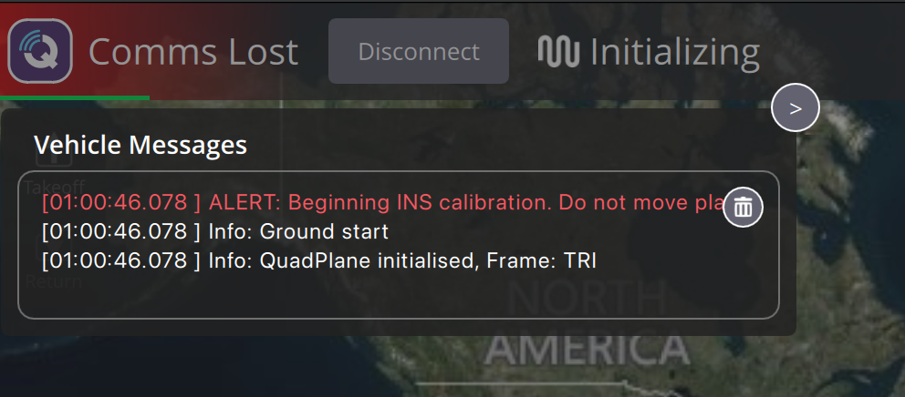
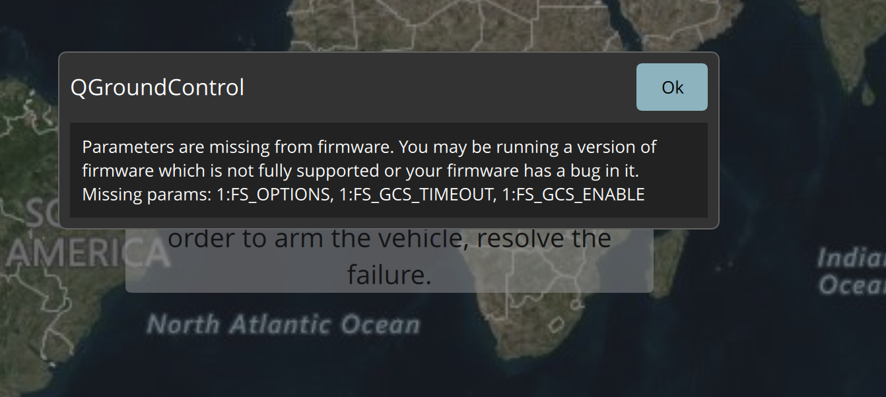
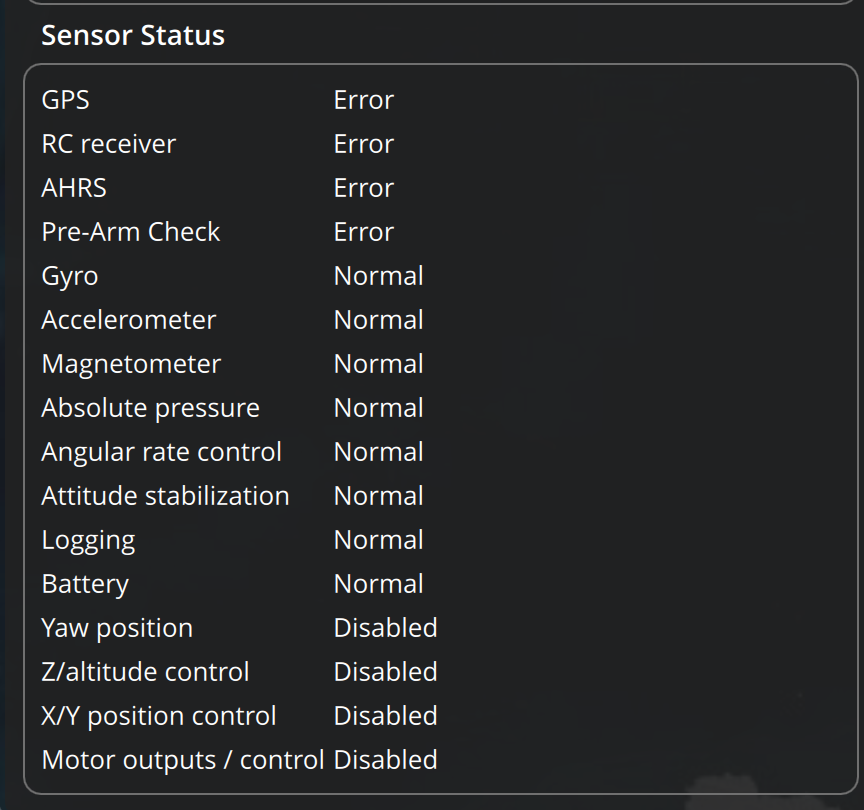
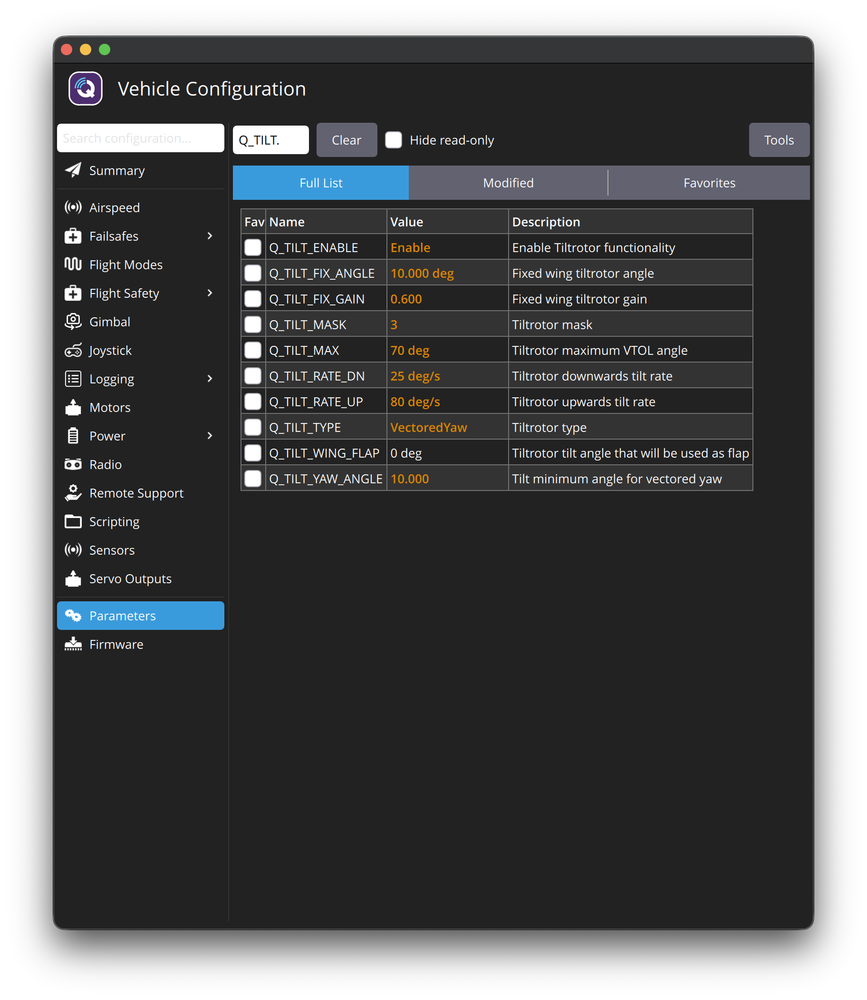
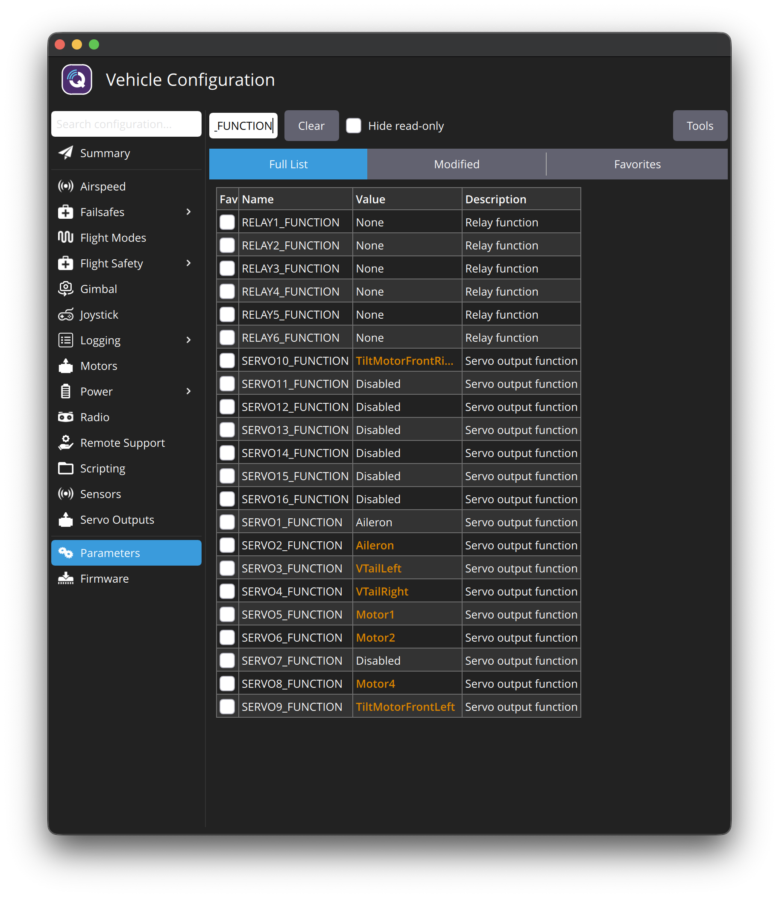
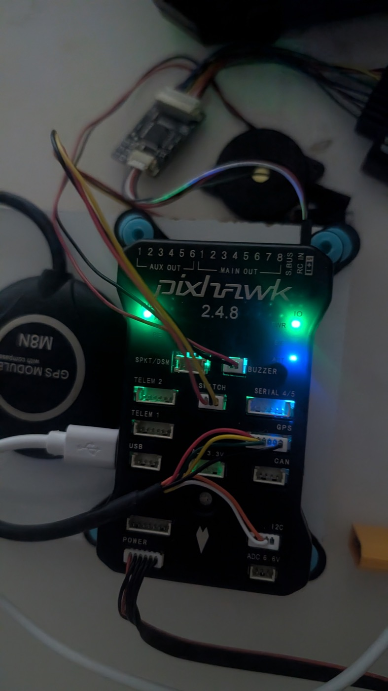
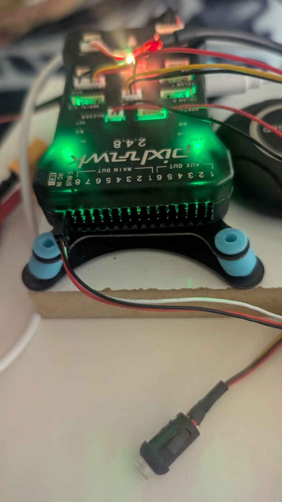

Connect the Pixhawk and check your ArduPlane setup
Goal: connect the board to QGroundControl, confirm it runs ArduPlane 4.7.1, see what is left over from your old Mission Planner setup, and save a backup of it. You won't change any settings in this guide. The firmware update to 4.7.2 is Guide 02.
- Firmware is now ArduPlane 4.7.2 (Guide 02).
- Board orientation fixed to
AHRS_ORIENTATION=0, accelerometer + level calibrated (Guide 03). - The small black board on RC IN is confirmed as a PPM encoder; the radio works with i6X Output mode PWM (Guides 04/05). "Radio failsafe on" is gone.
- The tail is confirmed as a V-tail: pitch = both tail wings together, yaw = opposite (you, 19:46).
- Drawing below redrawn 20:39 (tail surfaces on the tail wings, tilt servos shown).
- Connect the Pixhawk by USB only. No LiPo plugged in.
- No motors, ESCs, servos or propellers connected.
What we know so far
- You used ArduPlane before (with Mission Planner), so the board most likely runs ArduPlane 4.7.1. QGC says 4.7.2 is the latest stable version.
- QGC preferences: Firmware = ArduPilot, Vehicle = VTOL. ✅ Correct.
- The board may still hold old parameters from the Mission Planner days. Today we look at them and back them up. Guide 02 decides whether to keep them or start clean.
"QuadPlane": why that word, when we only have 3 motors?
QuadPlane is just ArduPlane's name for its VTOL feature. It does not mean 4 motors. It's the part of ArduPlane that lets a plane take off and land vertically with lift motors, then fly on its wings. It supports many motor layouts: quad, hexa, octa, tailsitter, tricopter and tilt-rotor.
Your VTOL Y3 is a tilt-rotor tricopter QuadPlane:
| Part | Servo? | Job |
|---|---|---|
| Front left + front right motors | ✅ 1 tilt servo each | Lift (pointing up) ↔ thrust (pointing forward) |
| Tail motor | ❌ none | Lift in drone mode only, off in airplane mode |
| Main wing, left + right | ✅ 1 servo each | Ailerons: roll in airplane mode |
| Tail wings, left + right (2 small wings at the back) | ✅ 1 servo each | V-tail (confirmed): pitch = both move together, yaw = they move opposite. |
Total: 6 servos = 2 tilt + 2 ailerons + 2 tail wings.
| Phase | Front motors | Tail motor | Who controls the aircraft |
|---|---|---|---|
Drone mode (takeoff / hover / landing): Q modes like QSTABILIZE, QHOVER, QLAND | Tilted up, providing lift | On, providing lift | The 3 motors (with the tilt servos for yaw) |
| Transition | Tilt from up → forward | Slowing down | Mixed: motors + wings, until airspeed is reached |
| Airplane mode: MANUAL, FBWA, CRUISE, AUTO… | Forward, providing thrust | Off | Wings: ailerons + 2 tail wings |
In ArduPlane this is configured with a few Q_ parameters. These are for reference only; don't set anything now:
| Parameter | Meaning for your Y3 |
|---|---|
Q_ENABLE = 1 | Turn on the VTOL (QuadPlane) feature of ArduPlane |
Q_FRAME_CLASS = 7 | Lift-motor layout = Tricopter (3 motors) |
Q_TILT_ENABLE = 1 | Some motors tilt |
Q_TILT_MASK = 3 | Which motors tilt: motor 1 + motor 2 = the two front motors (1 + 2 = 3) |
Q_TILT_TYPE | How they tilt (continuous, binary or vectored). Vectored means the left and right tilt servos move separately to steer yaw. We pick the type in a later guide. |
Without QuadPlane enabled, ArduPlane treats the aircraft as a normal airplane and would never lift it vertically.
Steps
Use the right USB cable
- The Pixhawk 2.4.8 has a micro-USB port on its side.
- Use a data cable. Charge-only cables light the board but QGC never connects.
- Plug it directly into the Mac (a simple USB-C adapter is OK), not through a hub or dock.
- macOS needs no driver.
Open QGroundControl, then plug in the Pixhawk
- Quit Mission Planner if it's still open anywhere (only one app can use the port).
- Open QGroundControl → plug in USB → wait about 10 seconds.
Read the Vehicle Messages, and get a stable connection
This step has 3 small parts: 3a open the messages, 3b understand them, 3c make sure the connection stays up.
3a. Open the messages. Click the Q logo / vehicle status area at the top-left of QGC (where it says "Comms Lost", "Ready" or "Not Ready"). A Vehicle Messages panel opens.
3b. What your screenshot shows ✅ (already done)

| Line | What it means |
|---|---|
QuadPlane initialised, Frame: TRI | 🎉 The board runs ArduPlane (only ArduPlane has QuadPlane), QuadPlane is already enabled (Q_ENABLE = 1), and the frame is already Tricopter (Q_FRAME_CLASS = 7). This is left over from your old Mission Planner setup, and it's correct for the Y3. |
Ground start | Normal: the board booted on the ground. |
ALERT: Beginning INS calibration. Do not move plane | Normal at every boot: it calibrates the gyros for a few seconds. Keep the Pixhawk still on the desk while it powers up. Red here doesn't mean an error. |
3c. Fix "Comms Lost" (red top bar)
Your screenshot shows "Comms Lost" with a red bar. QGC stopped receiving data from the Pixhawk. We need a stable connection before Guide 02 (flashing over a bad link can fail).
- Click Disconnect, then unplug the USB cable.
- Wait 5 seconds. Plug it back in, directly into the Mac (no hub), and don't touch the board while it boots.
- Watch the top bar for 1–2 minutes.
If it goes back to Comms Lost: try another USB cable (data cable), then another port. Tell me what happened in the report.
guide1_screenshots/vehicle-messages-full_2026-10-17_0147.txt. The results are explained in Results: what the board told us below.
Read the leftover VTOL settings (read only)
4a. If this popup appears, click Ok and carry on. It's harmless:

QGC is looking for FS_GCS_ENABLE, FS_GCS_TIMEOUT and FS_OPTIONS. Those are ArduCopter-style names. ArduPlane spells it differently (for example FS_GCS_ENABL, without the final E), so QGC doesn't find them. It's a QGC ↔ ArduPlane naming mismatch. Your firmware is fine and nothing is missing on the board. Click Ok.
4b. Open the Parameters screen:
- Click the purple Q icon in the top-left corner (the same icon next to "Not Ready").
- A panel opens titled "Select Tool" with big buttons: Plan Flight · Analyze Tools · Vehicle Configuration (older QGC: Vehicle Setup) · Application Settings. The QGC version number is shown at the bottom of this panel (you need it for step 6).
- Click Vehicle Configuration.
- A list appears down the left side: Summary, Firmware, Frame, Sensors, Radio, Flight Modes, Power, Safety, Tuning… Parameters is the last item. Scroll down that left list if you can't see it.
- Click Parameters. You get a big table of names and values with a Search box at the top.
4c. Search and write down each value (or "not found"). The easiest way to send them is a screenshot after each search:
| Search | Write down |
|---|---|
Q_ENABLE | 0 or 1 |
Q_FRAME_CLASS | value (7 = Tri) |
Q_TILT_ENABLE | value |
Q_TILT_MASK | value |
Q_TILT_TYPE | value |
SERVO1_FUNCTION … SERVO14_FUNCTION | Screenshot of the list (search _FUNCTION) |
Note: Q_FRAME_CLASS and the Q_TILT_* parameters only appear when Q_ENABLE = 1 (after a reboot). Your messages say QuadPlane is already on with Frame TRI, so expect Q_ENABLE = 1 and Q_FRAME_CLASS = 7. The Q_TILT_* values are the interesting part: they show whether the tilt was set up before.
Save a backup of the current parameters
- On the same Parameters page, click Tools (top-right).
- Choose Save to file…
- Save it as
params-backup_2026-10-17_before-guide02.paramsin yourdronev2folder.
.params file in the folder. If anything goes wrong later, this lets us compare with or restore the old setup.dronev2/backups/params-backup_2026-10-17_before-guide02.params. Don't edit or delete it.QGC version + 2 photos of the board
- Purple Q icon → the Select Tool panel → the version number (e.g.
v5.x.x) is shown at the bottom. - Photo of the Pixhawk top (label) and of the pin-header end (MAIN OUT / AUX OUT / RC IN).
The 1 MB flash question is already answered: the board runs the full Pixhawk1 build ✅. The photos are now for Guide 04 (wiring), so I can match the exact port labels on your board, and see what's already plugged in (the GPS?).
Results: what the board told us (step 3, 01:47)
Board identity ✅
| Message | Meaning |
|---|---|
ArduPlane V4.7.1 (dbe79216) | Firmware = ArduPlane 4.7.1, confirmed. |
Pixhawk1 00200035 … | Board target = Pixhawk1. This is the normal full-memory (2 MB) build, not the limited Pixhawk1-1M. So no 1 MB flash problem. In Guide 02 we install the Pixhawk1 build. |
IOMCU: 420 1001 … | The second processor that drives the MAIN OUT pins is working. |
QuadPlane initialised, Frame: TRI | VTOL is on, with the tricopter frame. Correct for the Y3. |
RCOut: PWM:1-14 | All 14 outputs (MAIN 1–8 + AUX 1–6) are in PWM mode, ready for ESCs and servos. |
No airspeed sensor | No airspeed sensor is fitted. Flying VTOL without one is possible, but ArduPilot recommends one for transitions. We'll decide later. |
GPS 1: detected u-blox · HW: 00070000 | ⚠️ A GPS is plugged in and works (u-blox, hardware ID 00070000). You said nothing was wired, so please check: is the GPS from the combo connected? "Bad fix" just means it's indoors. |
"Not Ready": the 7 PreArm messages, explained
These repeat every 30 seconds. All of them are expected right now, because nothing is wired or calibrated yet. None is a fault. Each one goes away in a later guide:
| PreArm message | Why it appears now | Fixed in |
|---|---|---|
Hardware safety switch | The safety button (red flashing button) isn't connected or pressed. | Guide 04 (wiring) |
Compass not calibrated | Compass calibration hasn't been done in QGC yet. | Guide 03 (sensors) |
GPS 1: Bad fix | Indoors, with no sky view. Normal. | Outdoors later |
AHRS: not using configured AHRS type | The navigation filter (EKF3) waits for a good GPS fix and calibrated sensors. Until then the board uses a simpler backup (AHRS: DCM active). | Guide 03 + outdoors |
Battery 1 low voltage failsafe | Powered by USB only, so it reads almost 0 V instead of 11.1 V from the LiPo. | Guide 04 (power module) |
Radio failsafe on | No receiver connected. The board also switched itself to QLAND (RC Long Failsafe On: switched to QLand), which is the correct safe reaction. | Guide 05 (FlySky) |
QLand mode not armable | A side effect of the radio failsafe putting it in QLAND. | Guide 05 |
PreArm: Gyros inconsistent appeared once, just after boot, then went away. That's usually because the board was still warming up or was moved during startup. Not a problem if it doesn't return. We'll check it again during calibration in Guide 03.
Sensor Status panel

Normal ✅ gyro, accelerometer, magnetometer, barometer, logging and battery monitoring. All the core sensors work. Error GPS, RC receiver, AHRS and Pre-Arm Check, which are exactly the items in the table above. Disabled position control and motor outputs, normal while disarmed.
Results: the old setup (steps 4–5, 02:01–02:10)
Sources: your 4 screenshots (guide1_screenshots/params-*.png) and the full backup file. In QGC, an orange value means it was changed from the default, so someone configured it on purpose.
VTOL / tilt settings ✅ all match the Y3

| Parameter | Value | Meaning |
|---|---|---|
Q_ENABLE | Enable | VTOL on ✅ |
Q_FRAME_CLASS | Tri | 3 lift motors ✅ |
Q_TILT_ENABLE | Enable | Tilting motors on ✅ |
Q_TILT_MASK | 3 | Motors 1 + 2 (the two front motors) tilt ✅ |
Q_TILT_TYPE | VectoredYaw (2) | Left and right tilt servos move separately to steer yaw in drone mode, so no extra yaw servo is needed ✅ |
Q_TILT_YAW_ANGLE | 10 | How far (°) the motors can tilt back past vertical for yaw |
Q_TILT_MAX | 70° | Maximum forward tilt while still in VTOL modes |
Q_TILT_RATE_UP / _DN | 80 / 25 °/s | Tilt speed: back to vertical (fast) / forward (slow) |
Q_TILT_FIX_ANGLE / _FIX_GAIN | 10° / 0.6 | Lets the tilt help steer in airplane mode |
Output map: what each pin on the Pixhawk does

On a Pixhawk 2.4.8, MAIN OUT 1–8 = SERVO1–8 and AUX OUT 1–6 = SERVO9–14. So the old setup expects:
| Pixhawk pin | Parameter | Function | Plug in here |
|---|---|---|---|
| MAIN 1 | SERVO1 | Aileron | Aileron servo (one wing) |
| MAIN 2 | SERVO2 | Aileron | Aileron servo (other wing) |
| MAIN 3 | SERVO3 | VTailLeft | Left tail wing servo |
| MAIN 4 | SERVO4 | VTailRight | Right tail wing servo |
| MAIN 5 | SERVO5 | Motor1 | ESC of the front RIGHT motor |
| MAIN 6 | SERVO6 | Motor2 | ESC of the front LEFT motor |
| MAIN 7 | SERVO7 | Disabled | (empty) |
| MAIN 8 | SERVO8 | Motor4 | ESC of the TAIL motor |
| AUX 1 | SERVO9 | TiltMotorFrontLeft | Tilt servo, front LEFT motor |
| AUX 2 | SERVO10 | TiltMotorFrontRight | Tilt servo, front RIGHT motor |
| AUX 3–6 | SERVO11–14 | Disabled | (empty) |
In ArduPilot's tricopter layout, Motor1 = front right, Motor2 = front left, Motor4 = tail (there's no Motor3). That's why Q_TILT_MASK = 3 (motors 1 + 2) means "the two front motors". All 6 servos + 3 ESCs = 9 outputs are assigned, which is exactly your hardware. This answers the tail question: the old setup treats your 2 tail wings as a V-tail (please still confirm by looking at the plane).
Other findings in the backup file
| Finding | Value | Meaning / action |
|---|---|---|
| ⚠️ Board orientation | AHRS_ORIENTATION = 2 (Yaw90) | The old setup expects the Pixhawk mounted rotated 90° (its arrow pointing sideways, not to the nose). It must match how the board sits in the plane. Checked in Guide 03. |
| Tilt servo endpoints | SERVO9: 800–1940 µs, reversed · SERVO10: 700–2100 µs | Someone tuned these to the real mechanism. 700/2100 is past the normal servo range, so we check for servo buzzing or straining at the ends in Guide 07 (props off). |
| Aileron ranges differ | SERVO1: 1100–1900 · SERVO2: 1000–2000 | Probably not intentional. Reviewed in Guide 07. |
| Flight modes | FLTMODE_CH = 8: QStabilize · QLoiter · FBWA · QStabilize · RTL · FBWA | Modes are switched with channel 8 on the radio. Reviewed with the FlySky in Guide 06. |
| ⚠️ Receiver port | SERIAL2_PROTOCOL = 23 (RC input on TELEM2) | The old setup may have plugged the FlySky receiver into TELEM2 (serial i-BUS) instead of RC IN. Decided in Guide 05. |
| Radio switches | RC5_OPTION = 153 (arm/disarm), RC6_OPTION = 4 (RTL), plus leftover options on RC9–RC16 | Cleaned up in Guide 06. |
| Arming | ARMING_RUDDER = 2 | Arm/disarm with the rudder stick is allowed. |
| Battery monitor | BATT_MONITOR = 4, capacity 3000 mAh, low 10.5 V → RTL | Standard Pixhawk power module values, matching your 3S 3000 mAh battery ✅ |
| Safety switch | BRD_SAFETY_DEFLT = 1 | The safety button is required. That's why "PreArm: Hardware safety switch" appears. |
| Compasses | 2 known: 466441 (external I²C, primary) + 131594 | The primary compass is an external one, most likely in the GPS module. That also suggests the GPS+compass is plugged in. "Not calibrated" probably means the compass changed or needs recalibrating. Guide 03. |
| Airspeed | ARSPD_TYPE = 0 | No airspeed sensor configured (matches the boot message). |
| Throttle limit | THR_MAX = 80 | Forward throttle capped at 80%. |
Results: step 6, your board and what's plugged in (02:17)


My reading of the photos. Please correct me if any line is wrong:
| Pixhawk port | What's plugged in | Status |
|---|---|---|
| USB | Cable to the Mac | ✅ |
| POWER | 6-wire cable to the power module | ✅ (no LiPo yet, so "low voltage" is expected) |
| GPS | M8N GPS (data) | ✅ matches "detected u-blox" |
| I2C | M8N compass | ✅ matches the external primary compass |
| BUZZER | Buzzer (black round part) | ✅ |
| SWITCH | Safety switch (the black part with the clear button, photo 2) | ✅ Probably. Pressing it comes in Guide 04 |
| RC IN (end of the pin row) | A 3-pin plug whose wires go to a small black circuit board, which connects to the receiver box (top-right) | ❓ The small board looks like a PPM encoder (converts separate receiver channels into one signal for RC IN). To confirm |
| TELEM1 / TELEM2 / SERIAL 4/5 / SPKT/DSM / CAN / ADC | Empty | Note: the old param SERIAL2_PROTOCOL=23 (receiver on TELEM2) doesn't match. TELEM2 is empty, so it's a leftover. Fixed in Guide 05 |
| MAIN OUT 1–8 / AUX OUT 1–6 | Empty (no ESCs or servos yet) | ✅ Correct for now |
AHRS_ORIENTATION must be changed from 2 (Yaw90) to 0 (None). We do this in Guide 03, before calibration. Also: in the photo the board sits on a test plate on the desk. Is it installed in the plane yet?
Troubleshooting
| Problem | Try this |
|---|---|
| Stays "Disconnected" | Different (data) cable → different port, no hub → quit Mission Planner → restart QGC with the board plugged in. |
| Connects, then drops repeatedly | Usually the cable or a hub. Use a direct port. |
| Red messages / "PreArm" errors | Normal now (no GPS, no radio, not calibrated). Ignore them for this guide. |
| Popup "Parameters are missing from firmware … FS_OPTIONS, FS_GCS_TIMEOUT, FS_GCS_ENABLE" | Harmless QGC/ArduPlane naming mismatch (see step 4a). Click Ok. |
| Can't find Parameters | Purple Q icon (top-left) → Vehicle Configuration → scroll to the bottom of the left list → Parameters. |
| Check the Mac sees the board | In Terminal: ls /dev/cu.usbmodem*. A line appears when the board is plugged in. |
Report back
Messages / stable link✅ ArduPlane 4.7.1, Pixhawk1, QuadPlane TRI, stable "Not Ready"Q_TILT + SERVOx_FUNCTION values✅ complete Y3 configBackup .params✅backups/params-backup_2026-10-17_before-guide02.paramsGPS plugged?✅ Yes, M8N GPS module with compassMounting✅ Flat, LEDs facing up. Arrow direction vs nose → checked in Guide 03Ever flew?✅ No. The old setup is untested, so every item gets verifiedKeep or reset params?✅ Keep and fix (agreed)QGC version✅ 5.1.52 photos✅ received (see Results: step 6)- Tail shape (V-tail?): still open, not needed for Guide 02
➡️ Next: Guide 02: Update to ArduPlane 4.7.2 (keep parameters)
Sources
- ArduPilot Plane: full parameter list (Plane uses
FS_GCS_ENABL, notFS_GCS_ENABLE) - ArduPilot Plane: QuadPlane overview (what QuadPlane is, supported frames)
- ArduPilot Plane: Tilt-Rotor Planes (Q_FRAME_CLASS 7 Tri, Q_TILT_MASK 3, tilt types, tilt servo functions 41 / 75 / 76)
- ArduPilot Plane: QuadPlane flight modes (QSTABILIZE, QHOVER, QLAND…)
- QGroundControl: Parameters (Tools → Save to file)
- QGroundControl: Loading Firmware (direct USB port, no hub)
- ArduPilot: Pixhawk overview (early STM32F427 revisions limited to 1 MB flash)